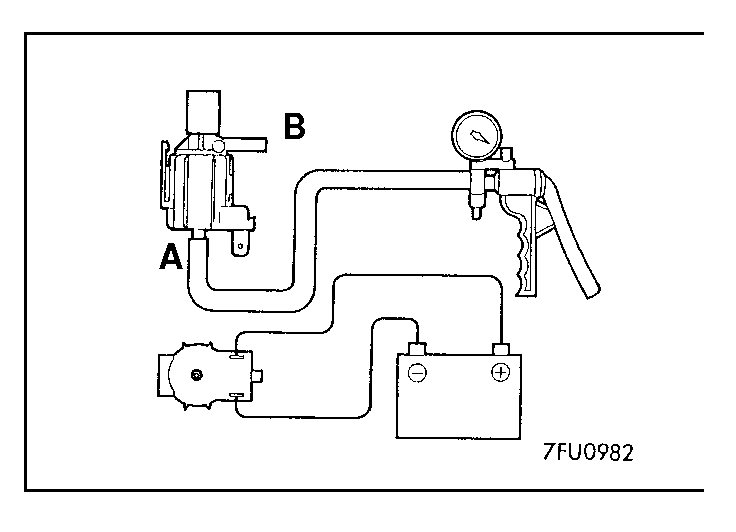
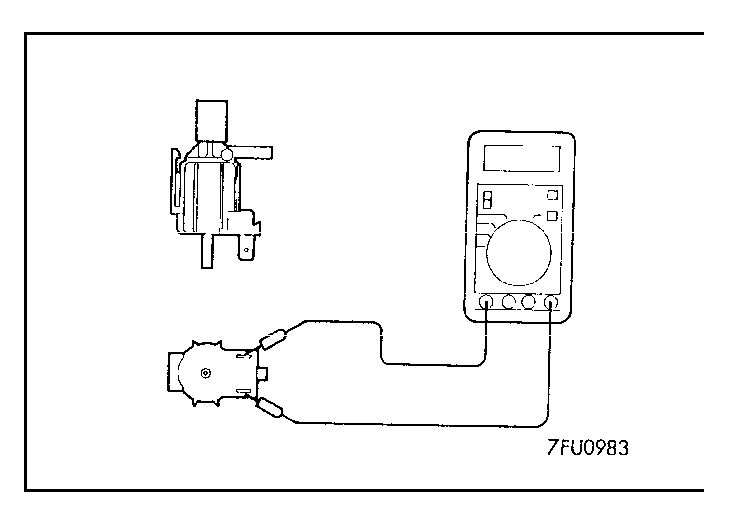

|
FUEL PRESSURE SOLENOID CHECK
<2.0L Engine (Turbo)>
NOTE
When disconnecting the vacuum hose, always make a mark so that it can be reconnected at original position.
1.Disconnect the vacuum hose from the solenoid valve.
2.Disconnect the harness connector. |
|

|
3.Connect a hand vacuum pump to the nipple.
4.Connect a battery to the solenoid valve and apply a vacuum to check air-tightness.
| Battery voltage |
B nipple |
Normal condition |
| Not applied |
Open |
Vacuum leaks |
| Closed |
Vacuum maintained |
| Applied |
Open |
Vacuum maintained |
|
|
|

|
5.Measure the resistance between the terminals of the solenoid valve.
Standard value: 36 - 44 Ω [at 20°C (68°F)] |
|
![[Previous]](https://mitsubishitechinfo.com/data/F24S/BUTTONS/fprevg.png)
![[Next]](https://mitsubishitechinfo.com/data/F24S/BUTTONS/fnextg.png)